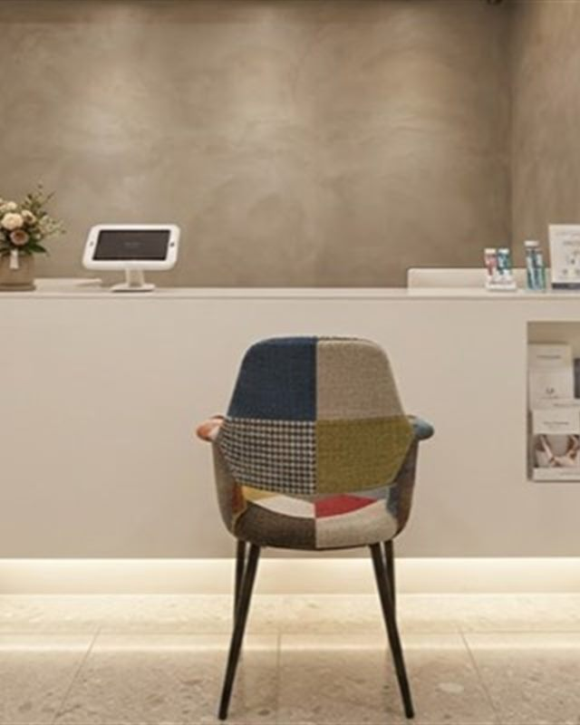

초등 · 중고등 · 성인 회화
말이 먼저 나오는 영어
문법을 외우기 전에 입을 엽니다. 여덟 명 이하의 작은 반에서
매 시간 말하고, 원어민 선생님이 그 자리에서 고쳐 줍니다.
진도를 나가는 것보다
말하게 하는 데 시간을 씁니다.
2011년부터 한 반 여덟 명, 같은 원칙을 지키고 있습니다.
안녕하십니까.
구로의 작은 교실 하나로 시작해 지금까지 같은 방식으로 가르칩니다.
반을 크게 늘리지도, 진도를 앞당기려 문제집을 더 얹지도 않습니다.
대신 한 시간에 한 사람이 말할 시간을 늘렸습니다.
반을 나눌 때는 나이가 아니라 지금 말할 수 있는 만큼을 봅니다.
레벨 테스트 결과는 부모님과 함께 보며 설명드리겠습니다.

강사진
수업은 강사가 합니다. 그래서 강사를 먼저 보여 드립니다.
모든 강사가 담당 학년을 맡아 학기 내내 같은 학생을 봅니다.
이대표
수능 독해와 내신 서술형을 함께 봅니다. 학생마다 어디서 막히는지를 먼저 찾고 그 지점만 반복해 풀립니다.
마이클 로건
교과서 문장을 입으로 옮기는 수업입니다. 발음보다 먼저, 하고 싶은 말을 끝까지 말해 보게 합니다.
박세진
학교별 기출을 따로 모아 씁니다. 시험 3주 전부터는 다니는 학교의 범위에 맞춰 반을 다시 짭니다.
정하은
소리부터 시작합니다. 읽는 재미가 붙을 때까지 단어 시험보다 소리 내어 읽는 시간을 더 많이 둡니다.
담당 강사와 직접 상담하실 수 있습니다. 원하시는 강사를 상담 신청서에 적어 주세요.
강사 지정 상담 신청수업 과정
같은 학년이라도 지금 말할 수 있는 만큼은 제각각입니다.
아래 과정 중 어디에 해당하는지 레벨 테스트로 먼저 확인해 드립니다.
파닉스 · 초등 기초
알파벳과 소리 규칙부터 시작합니다. 읽을 수 있게 되면 짧은 문장을 소리 내어 읽습니다.
- 알파벳 · 소리
- 사이트 워드
- 소리 내어 읽기
초등 회화 · 독해
매 시간 한 사람이 다섯 번 이상 말합니다. 짧은 글을 읽고 자기 말로 옮기는 연습을 함께합니다.
- 주제별 회화
- 짧은 발표
- 독해 기초
중등 내신
학교별 교과서와 기출을 따로 준비합니다. 시험 3주 전에는 학교별 반으로 나눠 대비합니다.
- 학교별 교과서
- 서술형 대비
- 단어 · 문법
고등 · 수능
지문을 읽는 순서와 시간 배분부터 잡습니다. 틀린 문제는 왜 틀렸는지 말로 설명하게 합니다.
- 독해 전략
- 듣기
- 모의고사 분석
원어민 회화
원어민 선생님이 그 자리에서 고쳐 줍니다. 틀려도 괜찮은 분위기를 먼저 만듭니다.
- 주제 토론
- 발음 교정
- 말하기 시험 대비
성인 회화
출근 전과 퇴근 후에 한 시간씩 엽니다. 업무 상황을 그대로 가져와 그 자리에서 연습합니다.
- 아침반 · 저녁반
- 업무 영어
- 여행 회화
레벨 테스트는 약 40분 걸립니다.
첫날은 테스트와 상담까지만 하고 돌아가셔도 됩니다. 등록은 반과 시간을 확인하신 다음 하시면 됩니다.
-
01
상담 신청
전화 · 온라인학년과 지금까지 배운 과정, 원하시는 요일을 먼저 여쭙니다. 테스트 날짜를 함께 정합니다.
-
02
레벨 테스트
약 25분읽기 · 듣기 · 말하기를 나눠 봅니다. 점수보다 어디서 막히는지를 찾는 것이 목적입니다.
-
03
결과 상담
약 15분테스트지를 함께 보며 지금 필요한 반과 수업 방향을 정합니다. 과정별 수강료가 적힌 안내서를 드립니다.
-
04
수업과 관리
등록 후담당 강사가 주간 학습 리포트를 보내드리고, 두 달마다 반 이동 여부를 함께 정합니다.
- 한 반은 여덟 명을 넘지 않습니다
- 담당 강사는 학기 중에 바뀌지 않습니다
- 수업 내용은 주간 리포트로 보내드립니다
학원 둘러보기
교실과 자습실, 상담실까지 아이들이 머무는 공간을 미리 둘러보세요.
고객 후기 다니는 학생과 부모님이 남긴 후기
퇴근길에도 들르실 수 있게 저녁까지 엽니다
- 점심시간
- 일요일 · 공휴일 휴관
| 구분 | 월 | 화 | 수 | 목 | 금 | 토 | 일 · 공휴일 |
|---|---|---|---|---|---|---|---|
| 오전 | 09:00 - 13:00 | 09:00 - 13:00 | 09:00 - 13:00 | 09:00 - 13:00 | 09:00 - 13:00 | 09:00 - 13:00 | 휴관 |
| 오후 | 14:00 - 18:30 | 14:00 - 18:30 | 수업 없음 | 14:00 - 18:30 | 14:00 - 18:30 | 수업 없음 |
레벨 테스트는 예약제로 진행합니다. 남겨 주시면 순서대로 연락드립니다.
수업 한 시간은 이렇게 진행됩니다.
-
01
단어 확인
지난 시간에 나간 단어를 짧게 확인하고 시작합니다.
-
02
읽기 · 듣기
그날의 지문을 읽고 들으며 모르는 표현을 함께 정리합니다.
-
03
말하기
배운 표현으로 한 사람이 다섯 번 이상 말합니다. 그 자리에서 고쳐 줍니다.
-
04
정리 · 리포트
그날 배운 것을 정리하고, 주간 리포트로 부모님께 보내드립니다.
상담 신청
예약 없이 오셔도 상담은 됩니다.
레벨 테스트는 미리 알려주시면 조용한 시간으로 잡아 드립니다.
지금까지 배운 교재가 있다면 가져와 주세요
교재가 없어도 괜찮습니다. 레벨 테스트로
지금 필요한 반을 찾아 드립니다
온라인 상담 신청
남겨주시면 가능한 반과 시간을 확인해 연락드립니다.